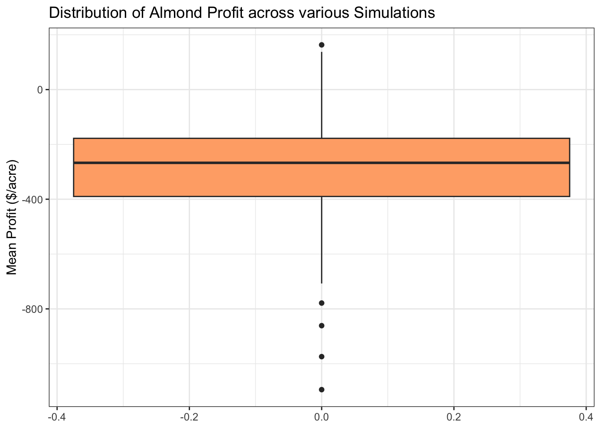

almonds <- read.table(here::here("assignment3", "clim.txt"),
header = TRUE)
source(here::here("assignment3","R", "almond_profit_function.R"))Almond Profit Model
Load Data and function
Prices
Create a list of almond prices over the years
From United States Department of Agriculture National Agricultural Statistics Service: 2024 California Almond Objective Measurement Report
p <- c(2.48, 2.08, 1.56, 1.41, 0.86, 0.97, 0.91, 1.11, 1.57, 2.21, 2.81, 2.06, 1.75, 1.45, 1.65, 1.79, 1.99, 2.58, 3.21, 4.00, 3.13, 2.39, 2.53, 2.50, 2.45, 1.71, 1.86, 1.40, 1.40)Run function
almond_profit_function(almond_df = almonds, prices = p) year avg_tmin_c sum_precip yield_anomaly avg_price_ton cost
1 1989 8.640417 2.798 -0.3552237 398.7586 186.4900
2 1990 8.681270 55.812 9.2906757 398.7586 203.2741
3 1991 10.391468 135.337 68.9130633 398.7586 221.5687
4 1992 11.908525 69.640 15.4280698 398.7586 241.5099
5 1993 10.939464 77.903 20.2083803 398.7586 263.2458
6 1994 9.623710 34.804 2.4820009 398.7586 286.9379
7 1995 12.586270 676.512 1919.9811511 398.7586 312.7623
8 1996 12.040460 40.252 3.5818399 398.7586 340.9109
9 1997 9.988571 285.296 329.6938750 398.7586 371.5929
10 1998 11.484643 89.762 27.8636956 398.7586 405.0363
11 1999 8.103690 0.000 -0.1436364 398.7586 441.4895
12 2000 11.614732 57.318 9.5999883 398.7586 481.2236
13 2001 8.822143 201.041 159.5119587 398.7586 524.5337
14 2002 7.719107 20.338 0.2450914 398.7586 571.7418
15 2003 9.312381 0.000 -0.2585997 398.7586 623.1985
16 2004 7.889272 14.478 -0.2367722 398.7586 679.2864
17 2005 10.423869 399.034 656.3724121 398.7586 740.4222
18 2006 9.374365 74.930 18.6324135 398.7586 807.0602
19 2007 10.046329 77.724 20.2007396 398.7586 879.6956
20 2008 9.239175 374.396 576.2821943 398.7586 958.8682
21 2009 8.556669 24.892 0.7367438 398.7586 1045.1663
22 2010 9.894963 197.612 153.7655092 398.7586 1139.2313
yield revenue profit
1 0.5447763 217.2343 30.7443
2 10.1906757 4063.6198 3860.3457
3 69.8130633 27838.5608 27616.9921
4 16.3280698 6510.9586 6269.4487
5 21.1083803 8417.1486 8153.9028
6 3.3820009 1348.6020 1061.6641
7 1920.8811511 765967.9183 765655.1560
8 4.4818399 1787.1723 1446.2614
9 330.5938750 131827.1576 131455.5647
10 28.7636956 11469.7716 11064.7353
11 0.7563636 301.6065 -139.8831
12 10.4999883 4186.9608 3705.7372
13 160.4119587 63965.6514 63441.1177
14 1.1450914 456.6151 -115.1267
15 0.6414003 255.7639 -367.4346
16 0.6632278 264.4678 -414.8186
17 657.2724121 262093.0405 261352.6183
18 19.5324135 7788.7183 6981.6581
19 21.1007396 8414.1018 7534.4063
20 577.1821943 230156.3757 229197.5075
21 1.6367438 652.6657 -392.5006
22 154.6655092 61674.2051 60534.9738Sensitivity Analysis
- Varies the temperature and precipitation inputs + price + discount rate
- Runs function for various simulations
- Extracts mean profit
# Generate parameter samples: tmin, precip, discount rate, and price
nsamples <- 300 # number of samples
mean_tmin <- rnorm(mean = 12, sd = 2, n = nsamples)
mean_precip <- rnorm(mean = 1, sd = 0.5, n = nsamples)
dis_rate <- rnorm(mean = 0.08, sd = 0.015, n = nsamples)
price_base <- 1.50
price_sd <- 0.80
p <- runif(max = price_base + price_sd * price_base,
min = price_base - price_sd * price_base,
n = nsamples)
# Put samples together
parms <- cbind.data.frame(mean_tmin, mean_precip, dis_rate, p)
# RUN THE SIMULATION OVER THE 300 SAMPLES
# Use pmap with wrapper (because your function needs a dataframe, not scalars like the solar model).
# `results` is results of 300 different simulations
results <- parms %>%
pmap(function(mean_tmin, mean_precip, dis_rate, p) {
almond_df <- data.frame(
tmin_c = rnorm(mean = mean_tmin, sd = 3, n = 40),
precip = rnorm(mean = mean_precip, sd = 2, n = 40),
month = c(rep(1, 20), rep(2, 20)),
year = rep(1981:2000, times = 2)
)
almond_profit_function(almond_df, prices = p, discount_rate = dis_rate)
})
# Extract mean profit column from each simulation result
mean_profit <- map_dbl(results, ~mean(.x$profit, na.rm = TRUE))
#mean_profit <- map_df(results, `[`, c("mean"))
# Add parameter values
mean_profit <- cbind.data.frame(mean_profit, parms)
head(mean_profit) mean_profit mean_tmin mean_precip dis_rate p
1 -592.8489 13.45948 0.9007771 0.05735710 0.8356465
2 -276.7906 14.16916 0.9484371 0.08052137 2.0279835
3 -380.3388 11.37955 1.0528844 0.06833736 0.8003206
4 -250.0258 11.38050 0.8721128 0.07585540 1.2090900
5 -178.1990 10.27800 1.0230229 0.07195415 2.5893118
6 -230.1505 10.56779 1.0619769 0.08640853 0.6348713Graphs
# 1) box or violin of mean_profit
ggplot(mean_profit) +
geom_boxplot(aes(y = mean_profit), fill = "#ffad76") +
labs(y = "Mean Profit ($/acre)",
title = "Distribution of Almond Profit across various Simulations") +
theme_bw()
# 2). Parameter SENSITIVITY - profit responds to each parameter
# Temperature sensitivity (and mean_profit)
plot_tmin <- ggplot(mean_profit, aes(x = mean_tmin, y = mean_profit)) +
geom_point(col = "sandybrown",
alpha = 0.8) +
geom_smooth(col = "firebrick") +
theme_minimal() +
labs(x = "Mean Minimum Temperature (C)",
y = "Mean Almond Profit ($/acre)",
title = "Almond Profit in Reponse to Temperature Variation")
# Precipitation sensitivity (and mean_profit)
plot_precip <- ggplot(mean_profit, aes(x = mean_precip, y = mean_profit)) +
geom_point(col = "skyblue2",
alpha = 0.8) +
geom_smooth(col = "firebrick") +
theme_minimal() +
labs(x = "Mean Minimum Precipitation",
y = "Mean Almond Profit ($/acre)",
title = "Almond Profit in Reponse to Precipitation Variation")
# Price sensitivity (and mean_profit)
plot_price <- ggplot(mean_profit, aes(x = p, y = mean_profit)) +
geom_point(col = "seagreen3",
alpha = 0.8) +
geom_smooth(col = "firebrick") +
theme_minimal() +
labs(x = "Almond Price ($/lb)",
y = "Mean Almond Profit ($/acre)",
title = "Almond Profit in Reponse to Price Variation")
# Discount Rate sensitivity (and mean_profit)
plot_discount <- ggplot(mean_profit, aes(x = dis_rate, y = mean_profit)) +
geom_point(col = "plum",
alpha = 0.8) +
geom_smooth(col = "firebrick") +
theme_minimal() +
labs(x = "Discount Rate",
y = "Mean Almond Profit ($/acre)",
title = "Almond Profit in Reponse to Discount Rate Variation")
main_plot <- (plot_tmin + plot_precip) / (plot_price + plot_discount)
ggsave(here::here("figs", "assignment4_sensitive_analysis.png"), height = 10, width = 10)